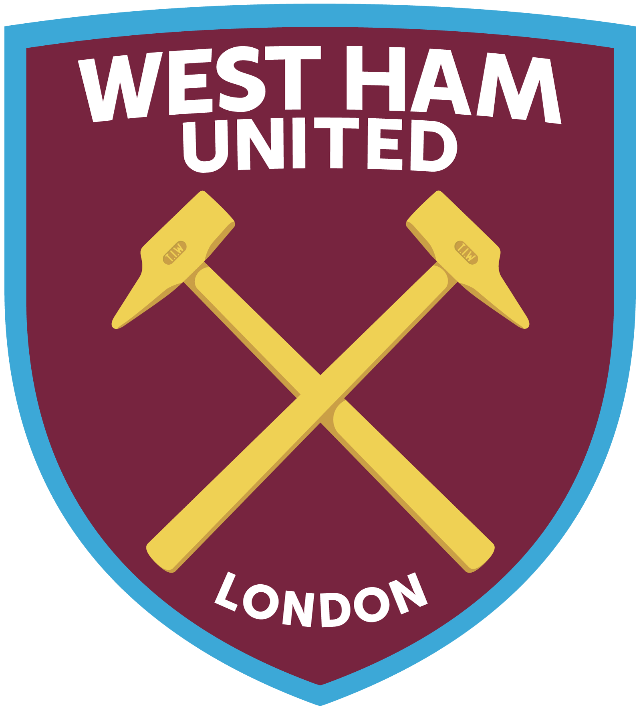
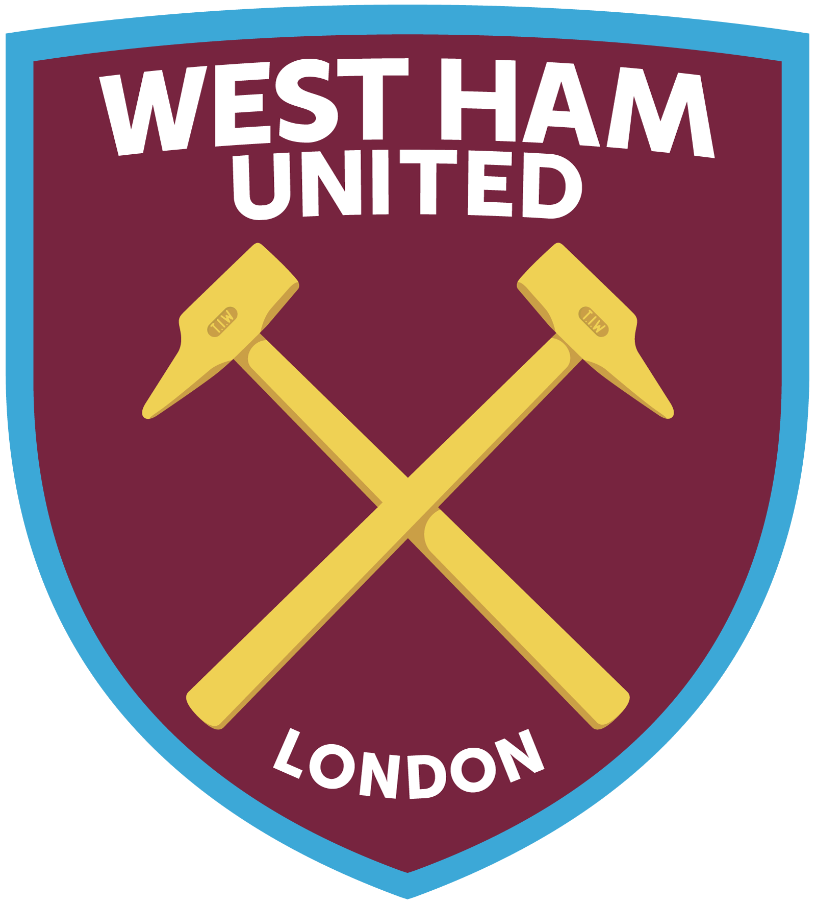

Jarrod Bowen joins Paul Burmeister and the chaps to share his thoughts on West Ham's emotional victory over Wolves in front of their fans at London Stadium.
Mohamed Salah has registered more goal contributions than any other player this season. But what has changed for him since Arne Slot's arrival? Why has he become unstoppable for Premier League defences? Why is he providing more assists, and what is his vital role in Liverpool's broader tactics?
Manchester City have now lost 5 games in a row in all competitions, the first time this has happened in Pep Guardiola's career
Here are some of the best goals from Matchweek 13 featuring Chelsea's Cole Palmer, Manchester United's Joshua Zirkzee, Liverpool's Cody Gakpo, Brighton's Kaoru Mitoma and MORE!!
With the Midweek Fixtures gone, attention turns to Gameweek 15 as December rolls on. This week's main topic is how essential Mo Salah, Cole Palmer and Bukayo Saka are as we break down the FPL stats. We also answer the question of whether or not it is time to sell Mbeumo, which strikers you should go for this week and much much more.